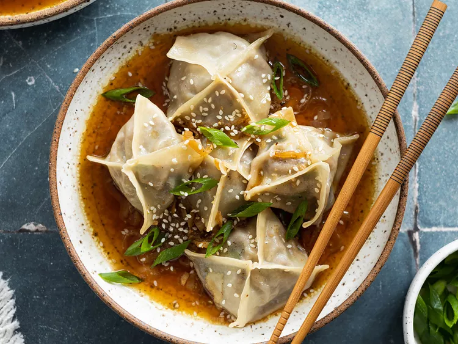

Beef and Mushroom Dumplings in Broth

Description
This is a flavor-packed recipe of ground beef and mushroom-filled dumplings in
a savory broth. Top with a drizzle of sesame oil, green onions, and sesame
seeds for an extra burst of flavor!
There are many different ways to shape dumplings and you can use either
dumpling or wonton wrappers. Be careful not to overfill the dumplings as that
may cause them to burst while cooking.
You can either brush the edges of the wrapper with water, or use a spray
bottle to lightly spray the wrapper edges to help seal the dumpling in your
chosen shape.
Ingredients
For the Dumplings
- 2 tablespoons olive oil
- 8 ounces crimini mushrooms, minced
- 2 garlic cloves, minced
- 1 pound ground beef
- 2 tablespoons grated fresh ginger
- 1 tablespoon low-sodium soy sauce
- 1/2 teaspoon freshly ground black pepper
- 4 green onions, chopped
- 36 wonton wrappers, or more as needed
For the Broth
- 2 tablespoons olive oil, or more as needed
- 2 shallots, sliced
- 2 garlic cloves, minced
- 1 tablespoon grated fresh ginger
- 4 cups vegetable broth
- 1/4 cup soy sauce
- 1/4 teaspoon red pepper flakes (optional)
For Serving
- 2 teaspoons sesame oil, or as needed
- 2 green onions, chopped, or as needed
- 1 teaspoon sesame seeds, or as needed
Steps
-
Heat 2 tablespoons olive oil in a large skillet over medium heat. Add
mushrooms and sauté until most of the water from the mushrooms has
evaporated and mushrooms are slightly golden, 8 to 10 minutes. Add garlic
and cook for 1 minute, stirring frequently. Set aside to cool.
-
To make the dumpling filling, combine ground beef, ginger, soy sauce,
black pepper, green onions, and the cooled mushroom mixture in a large
mixing bowl. Stir to combine; set aside.
-
To make the broth, heat 2 tablespoons olive oil in a pot over medium heat.
Add shallots and cook until softened and beginning to brown, about 3-4
minutes. Add ginger and garlic and cook for 1 minute, stirring frequently.
Add the vegetable broth, soy sauce, and red pepper flakes, and bring to a
boil, scraping the bottom of the pan as you stir. Reduce heat to low and
simmer uncovered for at least 10 minutes while you shape the dumplings.
-
To assemble dumplings, place 1 tablespoon filling in the center of each
wrapper. Brush the edges of wrapper with water (a spray bottle also works
well to spray the edges) and fold to shape. Seal each dumpling fully,
leaving no open holes. Repeat until all dumplings are filled.
-
Heat 2 tablespoons olive oil in a large skillet over medium heat. Working
in batches, add dumplings to the pan in one even layer and cook uncovered
until bottoms are golden, 2 to 3 minutes. Reduce heat to medium-low.
Carefully add ¼ cup water and immediately cover, letting the dumplings
steam until golden brown on the bottom and filling is no longer pink at
the center, 5 to 7 minutes. An instant-read thermometer inserted near the
center should read at least 160 degrees F (70 degrees C). Use more olive
oil If the dumplings are sticking to the pan.
-
Transfer cooked dumplings to a plate; keep warm. Repeat to cook remaining
dumplings.
-
To serve, place several dumplings in a shallow bowl, then pour over with a
spoonful of broth. Top with chopped green onions, sesame seeds and a
drizzle of sesame oil.
Guten Appetit!